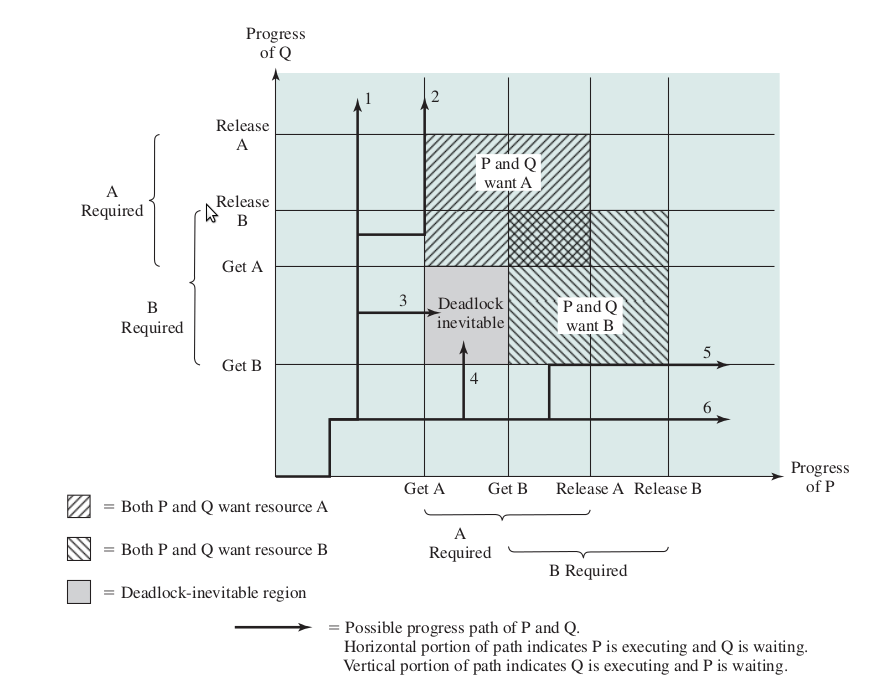
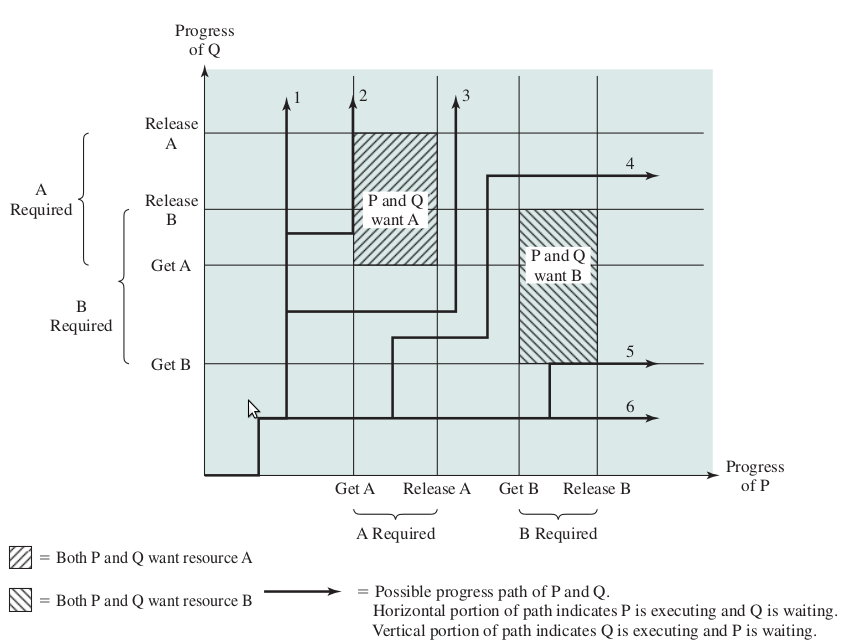

死锁概念
死锁是指多个进程（线程）因为长久等待已被其他进程占有的的资源而陷入阻塞的一种状态。当等待的资源一直得不到释放，死锁会一直持续下去。死锁一旦发生，程序本身是解决不了的，只能依靠外部力量使得程序恢复运行，例如重启，开门狗复位等。
Linux 提供了检测死锁的机制，主要分为 D 状态死锁和 R 状态死锁。
D 状态死锁
进程等待 I/O 资源无法得到满足，长时间（系统默认配置 120 秒）处于 TASK_UNINTERRUPTIBLE 睡眠状态，这种状态下进程不响应异步信号（包括 kill -9）。如：进程与外设硬件的交互（如 read），通常使用这种状态来保证进程与设备的交互过程不被打断，否则设备可能处于不可控的状态。对于这种死锁的检测 Linux 提供的是 hung task 机制，MTK 也提供 hang detect 机制来检测 Android 系统 hang 机问题。触发该问题成因比较复杂多样，可能因为 synchronized_irq、mutex lock、内存不足等。D 状态死锁只是局部多进程间互锁，一般来说只是 hang 机、冻屏，机器某些功能没法使用，但不会导致没喂狗，而被狗咬死。
R 状态死锁
进程长时间（系统默认配置 60 秒）处于 TASK_RUNNING 状态垄断 CPU 而不发生切换，一般情况下是进程关抢占或关中断后长时候执行任务、死循环，此时往往会导致多 CPU 间互锁，整个系统无法正常调度，导致喂狗线程无法执行，无法喂狗而最终看门狗复位的重启。该问题多为原子操作，spinlock 等 CPU 间并发操作处理不当造成。本文所介绍的 Lockdep 死锁检测工具检测的死锁类型就是 R 状态死锁。
常见错误
- AA: 重复上锁
- ABBA: 曾经使用 AB 顺序上锁，又使用 BA 上锁
- ABBCCA: 这种类型是 ABBA 的扩展。AB 顺序 , AB 顺序，CA 顺序。这种锁人工很难发现。
- 多次 unlock
AB-BA 死锁的形成
假设有两处代码（比如不同线程的两个函数 thread_P 和 thread_Q）都要获取两个锁（分别为 lockA 和 lockB），如果 thread_P 持有 lockA 后再去获取 lockB，而此时恰好由 thread_Q 持有 lockB 且它也正在尝试获取 lockA，那么此时就是处于死锁的状态，这是一个最简单的死锁例子，也即所谓的 AB-BA 死锁。
1 | thread_P() |
下面接合时间轴来观察死锁发生的时机：

X 轴表示进程 P 执行的时间轴，Y 轴表示进程 Q 执行的时间轴。
这幅图依据两个进程并发时间点不同而给出了 6 种执行线路：
- Q 获得 B，然后获得 A；然后释放 B，然后释放 A；此时 P 执行时，它可以获得全部资源
- Q 获得 B，然后获得 A；此时 P 执行并阻塞在对 A 的请求上；Q 释放 B 和 A，当 P 恢复执行时，它可以获得全部资源
- Q 获得 B，然后 P 执行获得 A；此时 Q 阻塞在对 A 的请求上；P 阻塞在对 B 的请求上，大家都在互相等待各自的资源而死锁
- P 获得 A，然后 Q 执行获得 B；此时 P 阻塞在对 B 的请求上；Q 阻塞在对 A 的请求上，大家都在互相等待各自的资源而死锁
- P 获得 A，然后获得 B；此时 Q 执行并阻塞在对 B 的请求上；P 释放 A 和 B，当 Q 恢复执行时，它可以获得全部资源
- P 获得 A，然后获得 B；然后释放 A，然后释放 B；此时 Q 执行时，它可以获得全部资源
下面这种情况是任何时间点都不会出现死锁的
1 | Process P Process Q |

lockdep 死锁检测模块
介绍了最简单的 ABBA 死锁的形成，回到正题，回到 kernel, 里面有千千万万锁，错综复杂，也不可能要求所有开发人员熟悉 spin_lock, spin_lock_irq, spin_lock_irqsave, spin_lock_nested 的区别。所以，在锁死发生前，还是要做好预防胜于治疗，防患于未然的工作，尽量提前发现并且提前在开发阶段发现和解决这其中潜在的死锁风险，而不是等到最后真正出现死锁时给用户带来糟糕的体验。应运而生的就是 lockdep 死锁检测模块，在 2006 年已经引入内核（https://lwn.net/Articles/185666/）。
1. 相关内核配置选项
CONFIG_PROVE_LOCKING
This feature enables the kernel to report locking related deadlocks before they actually occur. For more details, see Documentation/locking/lockdep-design.txt.
CONFIG_DEBUG_LOCK_ALLOC
Detect incorrect freeing of live locks.
CONFIG_DEBUG_LOCKDEP
The lock dependency engine will do additional runtime checks to debug itself, at the price of more runtime overhead.
CONFIG_LOCK_STAT
Lock usage statistics. For more details, see Documentation/locking/lockstat.txt
CONFIG_DEBUG_LOCKING_API_SELFTESTS
The kernel to run a short self-test during bootup in
start_kernel(). The self-test checks whether common types of locking bugs are detected by debugging mechanisms or not. For more details, see lib/locking-selftest.c
2. 基本实现
lockdep 操作的基本单元并非单个的锁实例，而是锁类（lock-class），事实上，也没必要跟踪千千万万的锁，完全可以用同一方式对待同一类锁的行为。比如，struct inode 结构体中的自旋锁 i_lock 字段就代表了这一类锁，而具体每个 inode 节点的锁只是该类锁中的一个实例。
1 |
|
对于每个锁的初始化，这段代码创建了一个静态变量 (__key)，并使用它的地址作为识别锁的类型。因此，系统中的每个锁 ( 包括 rwlocks 和 mutexes ) 都被分配一个特定的 key 值，并且都是静态声明的，同一类的锁会对应同一个 key 值。这里用得是哈希表来存储。
Lockdep 为每个锁类维护了两个链表：
- before 链：锁类 L 前曾经获取的所有锁类，也就是锁类 L 前可能获取的锁类集合。
- after 链：锁类 L 后曾经获取的所有锁类。
Lockdep 逻辑：
当获取 L 时，检查 after 链中的锁类是否已经被获取，如果存在则报重复上锁。联合 L 的 after 链，和已经获取的锁的 before 链。递归检查是否某个已经获取的锁中包含 L after 锁。为了加速，lockdep 检查锁类顺序关系，计算出 64bit 的 hash key。当新的 lock 顺序出现则计算 hash key 并放入表中。当获取锁时，则直接扫描表，用于加速。
也由于上述的设计逻辑，不可避免会存在误报。例如，同一类（对应相同 key 值）的多个锁同时持有时，Lockdep 会误报“重复上锁”的警报。此时，你就需要使用 spin_lock_nested 这类 API 设置不同的子类来区分同类锁，消除警报。
随便找一个代码例子：
1 | dentry_lock_for_move() @fs/dcache.c |
1）初始化
1 | spin_lock_init() |
2）获取锁
1 | spin_lock() |
3. 检查规则
1）概述
Lockdep 操作的基本单元并非单个的锁实例，而是锁类（lock-class）。比如，struct inode 结构体中的自旋锁 i_lock 字段就代表了这一类锁，而具体每个 inode 节点的锁只是该类锁中的一个实例。
lockdep 跟踪每个锁类的自身状态，也跟踪各个锁类之间的依赖关系，通过一系列的验证规则，以确保锁类状态和锁类之间的依赖总是正确的。另外，锁类一旦在初次使用时被注册，那么后续就会一直存在，所有它的具体实例都会关联到它。
2）状态
锁类有 4n + 1 种不同的使用历史状态：
其中的 4 是指：
- ‘ever held in STATE context’ –> 该锁曾在 STATE 上下文被持有过
- ‘ever held as readlock in STATE context’ –> 该锁曾在 STATE 上下文被以读锁形式持有过
- ‘ever held with STATE enabled’ –> 该锁曾在启用 STATE 的情况下被持有过
- ‘ever held as readlock with STATE enabled’ –> 该锁曾在启用 STATE 的情况下被以读锁形式持有过
其中的 n 也就是 STATE 状态的个数：
- hardirq –> 硬中断
- softirq –> 软中断
- reclaim_fs –> fs 回收
其中的 1 是：
- ever used [ == !unused ] –> 不属于上面提到的任何特殊情况，仅仅只是表示该锁曾经被使用过
当触发 lockdep 检测锁的安全规则时，会在 log 中提示对应的状态位信息
比如：
1 | modprobe/2287 is trying to acquire lock: |
注意大括号内的符号，一共有 6 个字符，分别对应 STATE 和 STATE-read 这六种（因为目前每个 STATE 有 3 种不同含义）情况，各个字符代表的含义分别如下：
- ‘.’ 表示在在进程上下文，在 irq 关闭时获得一把锁
- ‘-‘ 表示在中断上下文，获得一把锁
- ‘+’ 表示在 irq 打开时获得一把锁
- ‘?’ 表示在中断上下文，在 irq 打开时获得一把锁
3）单锁状态规则（Single-lock state rules）
- 一个软中断不安全 (softirq-unsafe) 的锁类也是硬中断不安全 (hardirq-unsafe) 的锁类。
- 对于任何一个锁类，它不可能同时是 hardirq-safe 和 hardirq-unsafe，也不可能同时是 softirq-safe 和 softirq-unsafe，即这两对对应状态是互斥的。
上面这两条就是 lockdep 判断单锁是否会发生死锁的检测规则。
关于四个名称的概念如下 :
- ever held in hard interrupt context (hardirq-safe);
- ever held in soft interrupt context (softirg-safe);
- ever held in hard interrupt with interrupts enabled (hardirq-unsafe);
- ever held with soft interrupts and hard interrupts enabled (softirq-unsafe);
4）多锁依赖规则（Multi-lock dependency rules）
- 同一个锁类不能被获取两次，否则会导致递归死锁（AA）。
1 | CPU0: [ L1 ] -> [ L1 ] |
- 不能以不同的顺序获取两个锁类，即：
1 | CPU0 CPU1 |
是不行的。因为这会非常容易的导致 AB-BA 死锁。当然，下面这样的情况也不行，即在中间插入了其它正常顺序的锁也能被 lockdep 检测出来：
1 | CPU0 CPU1 |
- 同一个锁实例在任何两个锁类之间，嵌套获取锁的状态前后需要保持一致，即：
1 | [hardirq-safe] -> [hardirq-unsafe] |
这意味着，如果同一个锁实例，在某些地方是 hardirq-safe（即采用 spin_lock_irqsave(…)），而在某些地方又是 hardirq-unsafe（即采用 spin_lock(…)），那么就存在死锁的风险。这应该容易理解，比如在进程上下文中持有锁 A，并且锁 A 是 hardirq-unsafe，如果此时触发硬中断，而硬中断处理函数又要去获取锁 A，那么就导致了死锁。后面会有例子分析。
在锁类状态发生变化时，进行如下几个规则检测，判断是否存在潜在死锁。比较简单，就是判断 hardirq-safe 和 hardirq-unsafe 以 及 softirq-safe 和 softirq-unsafe 是否发生了碰撞，直接引用英文，如下：
- if a new hardirq-safe lock is discovered, we check whether it took any hardirq-unsafe lock in the past.
- if a new softirq-safe lock is discovered, we check whether it took any softirq-unsafe lock in the past.
- if a new hardirq-unsafe lock is discovered, we check whether any hardirq-safe lock took it in the past.
- if a new softirq-unsafe lock is discovered, we check whether any softirq-safe lock took it in the past.
所以要注意嵌套获取锁前后的状态需要保持一致，避免死锁风险。
5) 出错处理
当检测到死锁风险时，lockdep 会打印下面几种类型的风险提示，更完整的 LOG 会在下面例子中展示。
- [ INFO: possible circular locking dependency detected ] // 圆形锁，获取锁的顺序异常（ABBA）
- [ INFO: %s-safe -> %s-unsafe lock order detected ] // 获取从 safe 的锁类到 unsafe 的锁类的操作
- [ INFO: possible recursive locking detected ] // 重复去获取同类锁（AA）
- [ INFO: inconsistent lock state ] // 锁的状态前后不一致
- [ INFO: possible irq lock inversion dependency detected ] // 嵌套获取锁的状态前后需要保持一致，即 [hardirq-safe] -> [hardirq-unsafe]，[softirq-safe] -> [softirq-unsafe] 会警报死锁风险
- [ INFO: suspicious RCU usage. ] // 可疑的 RCU 用法
4. 使用实例
Lockdep 每次都只检测并 report 第一次出错的地方。
1 | @lib/debug_locks.c |
只报一次死锁风险打印提示就不报了，因为第一个报出来的可能会引发其他的风险提示，就像编译错误一样。并且，这只是一个 warning info, 在实时运行的系统中，LOG 可能一下子就被冲掉了。本着魅族手机对用户体验极致的追求，不允许任何一个死锁风险在开发阶段侥幸存在，我们会把 lockdep warning 转化为 BUG_ON()，使机器在遇到死锁风险就主动重启来引起开发人员的关注，从而不放过每一个可能存在的漏洞。
下面是实际开发中遇到 lockdep 报的死锁风险 LOG：
1 | (0)[1132:system_server]====================================================== |
从上面的 LOG 信息可以知道：system_server 已经合了一个 HARDIRQ-safe 的锁 __spm_lock， 此时再去拿一个 HARDIRQ-unsafe 的锁 resume_reason_lock，违反了嵌套获取锁前后的状态需要保持一致的规则。
记得上面说过一条规则吗？
if a new hardirq-unsafe lock is discovered, we check whether any hardirq-safe lock took it in the past.（当要获取一个 hardirq-unsafe lock 时，lockdep 就会检查该进程是否在之前已经获取 hardirq-safe lock）
HARDIRQ-safe 是不允许 irq 的锁，如：spin_lock_irqsave(&lock, flags);
HARDIRQ-unsafe 是允许 irq 的锁，如：spin_lock(&lock);
在之前已经使用 spin_lock_irqsave 的方式拿了 __spm_lock， 再以 spin_lock 的方式拿 resume_reason_lock。再来看看可能发生死锁的情景：
1 | (0)[1132:system_server] Possible interrupt unsafe locking scenario: |
Lockdep 列出一个可能发生死锁的设想：
- CPU0 先获取了一个 HARDIRQ-unsafe 的锁 lock(resume_reason_lock)，CPU0 本地 irq 是开启的。
- 接着 CPU1 再获取了 HARDIRQ-safe 的锁 lock(__spm_lock)，此时 CPU1 本地 irq 是关闭的。
- 接着 CPU1 又去获取 lock(resume_reason_lock)，但此时该锁正在被 CPU0 锁持有，CPU1 唯有等待 lock(resume_reason_lock) 释放而无法继续执行。
- 假如此时 CPU0 来了一个中断，并且在中断里去获取 lock(__spm_lock)，CPU0 也会因为该锁被 CPU1 持有而未被释放而一直等待无法继续执行。
- CPU0， CPU1 都因为互相等待对方释放锁而不能继续执行，导致 AB-BA 死锁。
分析到这里，自然知道死锁风险点和正确使用锁的规则了，按照这个规则去修复代码，避免死锁就可以了。解决办法：
- 分析 resume_reason_lock 是否在其他地方中断上下文有使用这把锁。
- 如果没有，直接把获取这把锁的地方 wakeup_reason_pm_event+0x54/0x9c 从 spin_lock 改成 spin_lock_irqsave 就可以了。保持嵌套获取锁前后的状态一致。
参考资料
- 《Operating systems : internals and design principles / William Stallings. — 7th ed.》
- 内核文档 lockdep-design.txt
- 死锁检测模块 lockdep 简介
- Method and system for a kernel lock validator
- The kernel lock validator
This is copyright.